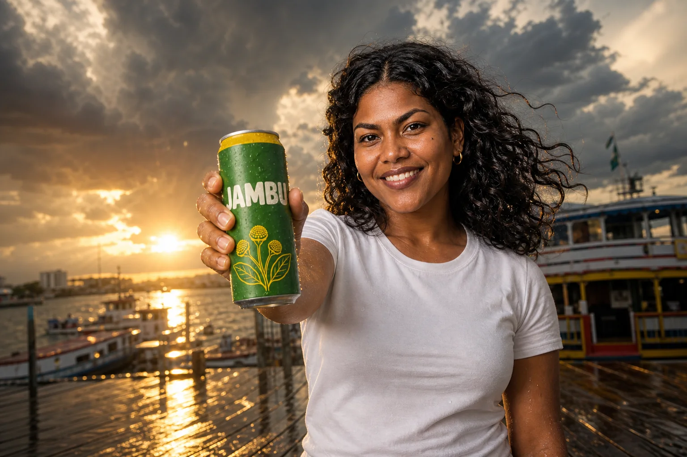
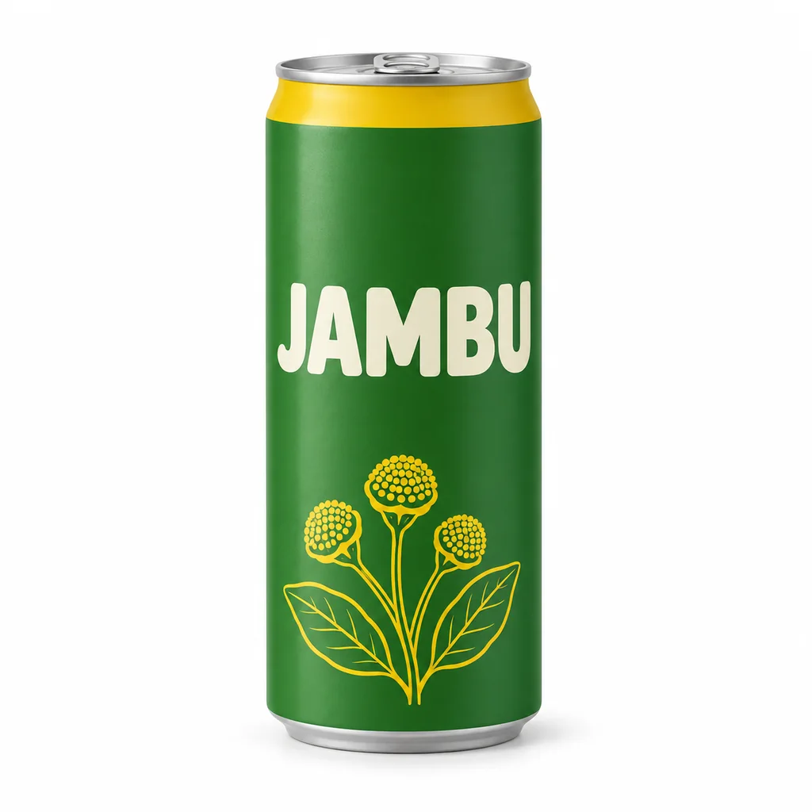

Nano Banana Pro
Uma campanha de marca completa, do produto à entrega
Monte o sistema visual inteiro de uma marca sem estúdio: foto de produto, personagem-herói consistente, texto e cores de marca na imagem, infográfico e storyboard. O método é o de trabalhar com modelos que entendem referências e instruções de edição.

O que você vai conseguir fazer
Como este curso ensina
O curso ensina o método de campanha com modelos multimodais (que aceitam várias imagens de referência e instruções de edição em linguagem natural). Os prompts estão escritos para Nano Banana Pro e funcionam, com ajustes, em outros modelos do mesmo tipo.
Cada etapa mostra a imagem produzida, o prompt exato e — quando é edição — a imagem-base de onde partiu.
A marca fictícia é a Jambu, um refrigerante artesanal de Belém (lata verde-folha, sabor cítrico com jambu). Você cria o produto, a heroína da campanha, as peças com texto e o storyboard de um comercial.
O caminho do curso

🧭 Prepare o modelo, o briefing e as referências
Antes do primeiro prompt: briefing, referências e a lata-base
7 tópicos · 9 imagens com prompt

🎯 Produto e personagem: uma base consistente
Um produto, uma heroína, dez fotos que parecem da mesma sessão
7 tópicos · 13 imagens com prompt

🎨 Controle de marca: cor, texto e hierarquia
HEX, slogan entre aspas e um brand book que o modelo obedece
8 tópicos · 11 imagens com prompt
🧪 Exploração criativa e storyboard
Da lata no estúdio ao comercial em seis quadros
7 tópicos · 12 imagens com prompt

🧩 Edições, referências múltiplas e adaptações
Rosto, roupa, lugar e objeto: cada referência com um papel
7 tópicos · 14 imagens com prompt

🏁 Projeto final: campanha Jambu
Produto, heroína, marca e storyboard numa entrega só
8 tópicos · 10 imagens com prompt
Abrir materiais: prompts, fichas e rubrica
As imagens de exemplo deste curso foram geradas com o GPT Image, da OpenAI (pela ferramenta de imagem do Codex e pelo modelo GPT Image na Magnific), não com o Nano Banana Pro: elas demonstram o método, e os prompts foram escritos para servir nos dois. No Nano Banana Pro o resultado vai variar. Abaixo de cada imagem está o prompt exato usado. Marca, pessoas e produto são fictícios.
Seu progresso fica neste navegador. Use Minha jornada → Exportar para fazer backup.